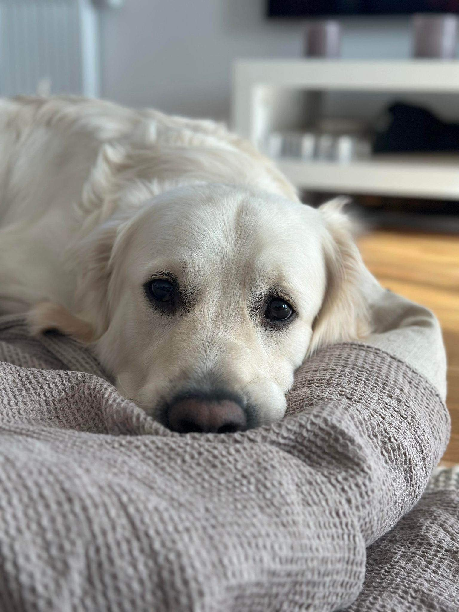

Milo
Jag har en golden retriever som är 3 år gammal. Han heter Milo, är alltid glad och älskar att leka. Han fungerar bra ihop med människor i alla åldrar samt gillar att utforska andra djur som tex katter. Trots att de inte är lika benägna att lära känna honom tillbaka, men vad gör det, Milo är lika glad ändå. Milo är lite annorlunda än andra hundar då han väldigt sällan skäller. Det händer enbart om hans husse (min sambo) aktivt försöker provocera fram ett skall genom lekar. Mot matte (mig) skäller Milo aldrig, då han vet om sedan han var valp att det är inget matte tycker om.